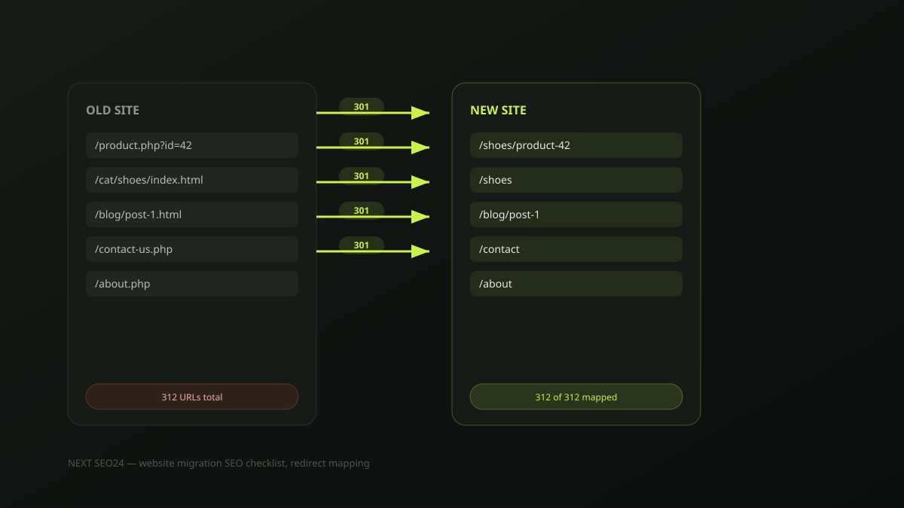

Website migration without losing Google rankings: the full checklist
We've been called in to fix more post-migration traffic collapses than we'd like — a new website launches, looks great, and organic traffic quietly falls 40-70% over the following month. It is almost always preventable. Here is the exact checklist we run for every client migration, redesign or replatform.
A migration is any change that alters URLs, platform or structure — a redesign, a move from WordPress to Shopify, switching domains, or restructuring your site's folders. Google has to rediscover and re-evaluate every page from scratch, and it uses your redirects as the map. Get the map wrong, and years of accumulated ranking signal simply doesn't transfer.
Before you touch anything: build a complete URL inventory
The single most common mistake is working only from the current sitemap. Sitemaps frequently miss old, orphaned or unlinked pages that still hold rankings and backlinks. Pull your full URL list from three sources and merge them:
- Google Search Console. Export every indexed URL from the Coverage/Pages report — this is the definitive list of what Google currently knows about.
- A full site crawl. Use a crawler (Screaming Frog or similar) on the live site to catch pages Search Console hasn't picked up recently.
- Your analytics. Cross-check against Google Analytics for any URL that received real traffic in the last 12 months, even if lightly indexed.
Map every single URL — not just the top ones
Build one spreadsheet: old URL, new URL, priority, status. Two rules make or break this step:
- One redirect hop, always. Redirect A directly to C — never A→B→C. Redirect chains dilute signal at every hop and some crawlers stop following after a few hops entirely.
- Never mass-redirect to the homepage. A URL with no genuine equivalent should redirect to its closest real content match — a parent category, for example — or be left to 404 properly. Google treats an irrelevant catch-all redirect as a soft 404, and you lose the ranking value of that URL either way while also confusing users.
Preserve on-page SEO equity during the rebuild
Keep title tags, meta descriptions and core headings the same — or very close — at launch, even if the visual design changes completely. Changing platform, design and on-page copy all at once means that if rankings move afterward, you have no way to isolate which change caused it. Roll out content and copy changes as a separate phase after the migration has stabilised.
Keep the staging site out of Google entirely
We've seen a staging subdomain get indexed, then compete with and even outrank the real site on launch day because it had more accumulated trust at that URL. Before any content goes on a staging environment, block it with a site-wide noindex meta tag or, more reliably, HTTP authentication so crawlers can never reach it at all. Never rely on robots.txt alone — a disallowed page can still get indexed by URL if it's linked to from elsewhere.
Launch day sequence
- Push all redirects live before or at the exact moment the new site goes live — never after.
- Submit the new XML sitemap in Search Console immediately.
- Keep the old sitemap accessible (even if it 404s the individual URLs through your redirect map) for two to four weeks so Google can process the transition in an orderly way.
- Use the URL Inspection tool to request indexing on your 10-20 highest-value pages rather than waiting for organic recrawl.
- Double-check
robots.txtdidn't inherit a staging "Disallow: /" rule — this single leftover line has taken entire sites out of Google on launch day.
The first 30 days: what to actually monitor
Check Search Console's Coverage report daily for the first two weeks, watching specifically for a spike in 404 or soft-404 errors — that's your redirect map telling you what it missed. Compare traffic to the same period last year rather than last month, since most businesses have real seasonality that's easy to mistake for migration damage. A temporary dip of roughly 5-15% for one to three weeks is normal reprocessing; a drop beyond that, or one that isn't recovering by week four, means something in the checklist above was missed.
Migration disasters we've actually seen
- A "Disallow: /" left in production robots.txt after copying it from the staging environment — the entire site vanished from Google within a week.
- Every old blog URL redirected to the new homepage "to be safe" — hundreds of ranking articles reduced to soft 404s overnight.
- A canonical tag left pointing at the staging domain after copy-pasting the template, telling Google the staging site was the "real" version.
- Redirect chains three and four hops long from years of incremental restructuring, silently leaking ranking signal at every hop.
If a migration is planned and you want a second pair of eyes on the redirect map before launch, send it to us — this is exactly the kind of review that's far cheaper before launch than after.
Frequently asked questions
How much traffic loss is normal during a website migration?
Even a well-executed migration typically shows a temporary dip of around 5-15% for one to three weeks while Google recrawls and reprocesses redirects. A drop beyond that range, or one that doesn't start recovering within a month, usually points to a specific error rather than normal reprocessing.
Should I redirect old pages that have no modern equivalent to the homepage?
No. Mass-redirecting unmatched URLs to the homepage is treated by Google as a soft 404 and wastes the ranking signals those pages held. Redirect each URL to its closest genuine content match; if none exists, let it 404 properly rather than redirecting it somewhere irrelevant.
How long should I keep 301 redirects in place after a migration?
Indefinitely where possible, and at minimum for one to two years. Google can take months to fully transfer signals, and external backlinks pointing to old URLs never expire on their own — removing redirects too early breaks both.
Planning a redesign or replatform?
Send us your current sitemap and we'll review your migration plan for free before you launch — the redirect mistakes above are far cheaper to catch beforehand.
Chat on WhatsApp →